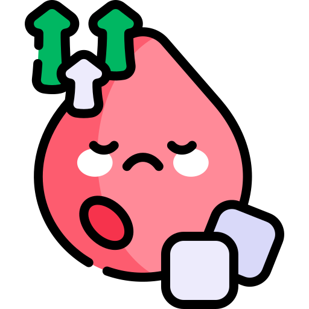

Diabetes Risk Detection
Jenis Kelamin
Pilih...
Laki-laki
Perempuan
Berat Badan (kg)
Tinggi (cm)
Hasil BMI:
0
Kategori:
Usia (tahun)
Lingkar Pinggang
Pilih...
<80cm
80-88cm
89-93cm
94-102cm
>102cm
Apakah kakek, bibi, paman, atau sepupu pertama pernah didiagnosis Diabetes?
Pilih...
Ya
Tidak
Apakah orang tua, saudara kandung, atau anak kandung pernah didiagnosis Diabetes?
Pilih...
Ya
Tidak
Apakah kamu pernah memiliki kadar gula darah yang tinggi?
Pilih...
Ya
Tidak
Apakah kamu sehari-hari pernah mengkonsumsi obat darah tinggi?
Pilih...
Ya
Tidak
Apakah kamu berolahraga selama lebih dari 30 menit setiap hari?
Pilih...
Ya
Tidak
Seberapa sering kamu mengkonsumsi sayur dan buah?
Pilih...
Setiap Hari
Jarang
Hitung Risiko
Download PDF
Ulangi